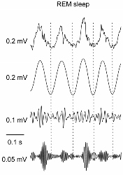
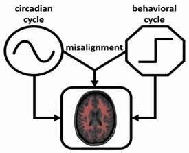
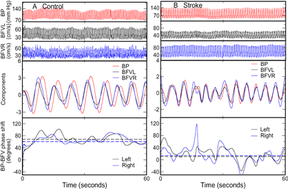

About Us
Biological control systems are typically very complex, involving multiple, interacted control nodes that function at different time scales. Outputs from these systems such as motor activity, heart rate, and brain activity often display seemingly “irregular” and “unstable” fluctuations with rich dynamic features (e.g., fractal patterns, phase synchronization and cross-frequency phase-amplitude modulation) that are beyond the understanding of traditional neurobiology. How to assess the underlying control mechanisms based on these fluctuations is a contemporary challenge in the field of biology. Concepts and methods derived from modern statistical physics and nonlinear dynamics appear to be able to provide suitable, promising tools for assessing the integrated behaviors of these complex neurophysiological signals on a system level and from a network point of view. The goal of the Medical Biodynamics Program is to foster such translational research in sleep medicine and to create new data analysis methods, mathematical theories, and mechanistic, experimentally-based models for the study of neurophysiological systems. We are interested in a broad range of neurophysiological systems, from the cardiovascular system, to the circadian system, to the brainstem systems generating sleep, through the cortical systems generating complex cognition (see examples of on-going projects below).
Projects
Current Research Projects
Multiscale regulatory function of the circadian system in heath and disease
One of the most puzzling phenomena in modern physiology is the existence of fractal patterns in a wide range of physiological systems (i.e., the structure of fluctuations are similar at different time scales). The physiological importance of fractal control is demonstrated in numerous studies and exemplified by reduced fractal cardiac and activity controls with aging and under pathological conditions, and most importantly, by the predictive value of reduced fractal cardiac control for decreased survival. Fractal physiology appears to impart some adaptive advantage, and in this context, the existence of fractal patterns challenges the traditional theory of homeostasis of maintaining physiologic constancy. Despite the clear importance of this fractal phenomenon, to date, no underlying mechanism has been established for fractal control in any neural or physiological system.
Our recent studies indicate that the endogenous circadian system is critically involved in the fractal control of motor activity at multiple time scales. To further understand the underlying mechanisms of fractal control and to apply the concept to diagnosis and prognosis of diseases,
we have a number of on-going projects including, but not limited to, the following:
Project 1
Fractal Regulation and Pathology of Alzheimer’s Disease. The goal of the proposal is to determine the contributions of the degradation of fractal regulation to brain dysfunction and the pathological progression of Alzheimer’s disease (AD) in older adults.
Project 2
Fractal motor activity regulation and the risk for Alzheimer’s disease in middle-to-old aged adults. The goal of this project is to determine the ability of fractal regulation in motor activity to predict the risk of AD in people at their middle to old ages.
Project 3
Network modeling of the impacts of the circadian system on the rhythmicity and fractal regulation. The goal of this project is to establish a mathematical model to explain the previously observed finding that perturbing the circadian control not only affects the rhythmicity of behavior and physiology but also disturbs fractal motor activity and cardiac dynamics at multiple time scales.
Nonlinear coupling in brain activity rhythms

Brain activities (EEG) show complex fluctuations at
different time scales (e.g., alpha, beta, gamma, delta,
and theta waveforms). Recent studies revealed that
these brain rhythms/fluctuations are not independent
but exhibit cross-frequency coupling (CFC) and that the
coupling changes with sleep sand plays an important role
in memory and learning. We are specifically interested in
one type of the CFC, namely, the phase-amplitude coupling
(PAC), in which the amplitude of a high-frequency oscillation
(e.g., gamma: ~40-180Hz) is modulated by the phase of the
other waveform at a lower frequency (e.g., theta: ~4-10Hz).
One of the on-going projects in which the technique is utilized is Modeling the schizophrenias. NMDA hypofunction is one of the leading hypotheses of schizophrenic pathophysiology. In collaboration with Prof. Bernat Kocsis at Beth Israel Deaconess Medical Center, the project is designed to investigate how the effects of NMDAR antagonism on brain function, cognition and behavior depend differentially on NMDAR subtype- and region-specific effects. In this project, animal models are used and the phase-amplitude coupling between potentiated high frequency oscillations (HFOs, ∼140 Hz) and other slow brain rhythms (e.g., theta and delta) are examined.
Circadian rhythms of behavior and physiology

Many physiological functions including sleep,MBP schematic Circadian rhythms of
behavior and physiology cognition, cardiac function display circadian rhythms of ~24 h
that are generated and coordinated by the circadian timing system that prepares the
body for the anticipated environmental and behavioral cycles. In mammals the central
circadian clock of the circadian system is the hypothalamic suprachiasmatic nucleus
(SCN). Normally the circadian system orchestrates ~24 rhythms of physiological
functions in synchrony with daily behavioral cycles for optimally integrated functions
within the body. However, the synchronization can be disrupted and circadian
misalignment occurs when behaviors (e.g., sleep, wake, and work) are mistimed as
occurred in shift work and jet lag. It is believed that circadian misalignment may
underlie many adverse health consequences of shift work, including increased risk of
obesity, diabetes, cardiovascular disease, sleep disorders, and cancer. We have
several on-going projects to investigate the physiological importance of the circadian
control and the factors/interventions that can influence the control.
Project 1
Sleep-wake regularity and cardiac autonomic function in college students. The goal is to determine how disrupting normal sleep-wake cycles affects cardiac autonomic function and its daily rhythm in college students.
Project 2
Chronic Pain in Shift workers: the Role of Sleep, Circadian Rhythms and the Autonomic Nervous System. The goal of this project is to examine whether shift work increases the risk for chronic pain via its adverse influences on the circadian regulation of autonomic function.
Project 3
Fractal motor activity regulation and the risk for Alzheimer’s disease in middle-to-old aged adults. The goals of this project are to determine the degradation in fractal activity regulation from middle to old ages, the genetics underpinnings of fractal activity degradation, its associated neuroanatomical changes in the brain, and its ability to predict the risk for Alzheimer’s disease.
Project 4
Integrated motor activity biomarker for the risk of Alzheimer’s dementia. The goal of this project is to develop an integrated, non-invasive biomarker for the risk of Alzheimer’s disease using motor activity recordings.
Project 5
Prediction of dementia in older adults using EEG holo-spectrum and deep learning. The goal of this project is to establish the EEG-based biomarker for dementia using the novel Holo-spectrum analysis and artificial intelligence technique.
Project 6
Effects of circadian misalignment on cerebral metabolism and cognition. The goal of this project is to determine whether the adverse effect of shift work on cognition is contributed by the influences of disrupted circadian rhythms on the blood and oxygen supply to the brain.
Project 7
CLOCK 3111TC genetic variant: linking the circadian system and obesity. Humans carrying the genetic variant C at the circadian gene CLOCK (Circadian Locomotor Output Cycles Kaput) 3111T/C have difficulty to lose weight—weight loss resistance—as compared to non-carriers. The goal of this project is to determine the role of the endogenous circadian clock— the body clock that prepares the body for the anticipated environmental and behavioral cycles — in weight-loss resistance in C carriers.
Project 8
Circadian disruption and neuroanatomical changes in the development of delirium and postoperative cognitive dysfunction (POCD). This project will examine the effects of circadian/sleep disruption in middle-age on the incidence of later life delirium after hospitalization. We will also examine neuroanatomical and functional differences as a result of long-term circadian disruption that may increase the risk of delirium and POCD.
Non-invasive measures of cerebral autoregulation based on spontaneous BP and BF fluctuations

Cerebral autoregulation (CA) is an important vascular control mechanism that regulates blood supply to brain tissue to match metabolic demands during daily activities. CA involves dilation and constriction of cerebral arterioles in response to changes of systemic blood pressure (BP) through myogenic and neurogenic mechanisms. Impaired CA increases the dependence of cerebral blood flow (CBF) on systemic BP, which may lead to hypoperfusion or hyperperfusion when BP fluctuates, even within the normal pressure range (50-150 mmHg). We and others have shown that CA is impaired in cerebromicrovascular diseases associated with age, hypertension and diabetes, and is even more impaired after stroke. However, it is still unclear whether or how the CA impairment affects neuroanatomical brain structures and, thus, contributes to functional decline in older individuals. The goals of this project are to determine the effects of the CA impairment on brain structure and to test the ability of CA to predict functional outcomes in elderly subjects.
Publications
- All
- Kun Hu, Ph.D.
Director - Peng Li, Ph.D.
Research Director - Lei Gao, M.D.
Clinical Director


Team
Faculty
Kun Hu, Ph.D.
Associate Professor of Medicine, Harvard Medical School, Associate Physiologist, Division of Sleep and Circadian Disorders, Departments of Medicine and Neurology, Brigham and Women's HospitalOther Affiliation(s): Director, Medical Biodynamics Program, Brigham and Women's Hospital
Peng Li, Ph.D.
Instructor in Medicine, Associate Physiologist Division of Sleep Medicine, Harvard Medical School Division of Sleep and Circadian Disorders, Brigham and Women's HospitalOther Affiliation(s): Research Director, Medical Biodynamics Program, Brigham and Women's Hospital
Lei Gao, M.D.
Instructor in Anaesthesia, Massachusetts General HospitalOther Affiliation(s): Clinical Director, Medical Biodynamics Program, Harvard Medical School, Brigham and Women's Hospital
Research Staff
Arlen Gaba,
Research Assistant, Division of Sleep and Circadian Disorders, Brigham and Women's HospitalLongchang Cui
Research Assistant, Division of Sleep and Circadian Disorders, Brigham and Women's HospitalContact
Medical Biodynamics Program, Division of Sleep Medicine, BWH
221 Longwood Ave
Boston, MA 02115
mbp@example.edu
+1 777-777-7777